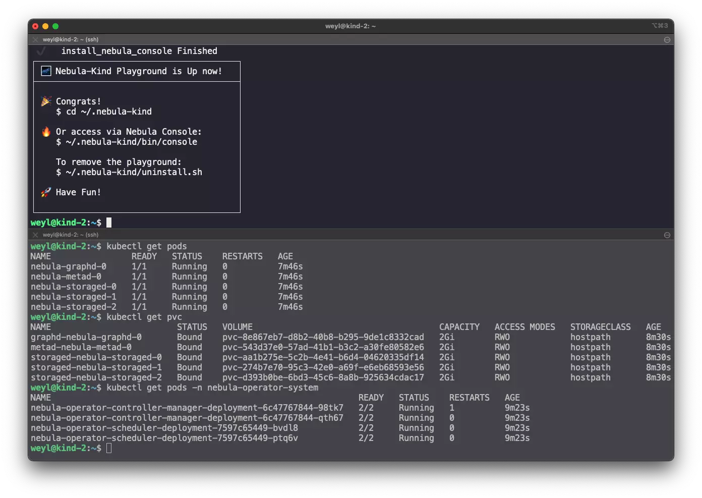

Nebula Operator Kind, oneliner installer for Nebula K8s Operator Playground
")
Nebula-Kind, an one-liner command to try K8s Operator based Nebula Graph Cluster on your machine, with the help of KIND (K8s in Docker)
Nebula-Operator-Kind
As a Cloud Native Distributed Database, Nebula Graph comes with an open-source K8s Operator to enable boostrap and maintain Nebula Graph Cluster from a K8s CRD.
Normally it takes you some time to setup all the dependencies and control plane resources of the Nebula Operator. If you are as lazy as I am, this Nebula-Operator-Kind is made for you to quick start and play with Nebula Graph in KIND.
Nebula-Operator-Kind is the one-liner for setup everything for you including:
- Docker
- K8s(KIND)
- PV Provider
- Nebula-Operator
- Nebula-Console
- nodePort for accessing the Cluster
- Kubectl for playing with KIND and Nebula Operator
How To Use
Install Nebula-Operator-Kind:
|
|
You will see this after it’s done 
You can connect to the cluster via ~/.nebula-kind/bin/console as below:
|
|
More
It’s in GitHub with more information you may be intrested in ;-), please try and feedback there~ https://github.com/wey-gu/nebula-operator-kind
Banner Picture Credit: Maik Hankemann